One section per message, as the message system has it: how it looks, and where on the screen it appears (the gold box). A real game client drew each one against a test copy of the server, taken by script at 1920x1080, from OverStrike2 0dee310 (HUD content v4.7.0, plugin 5.1.0). Test names only. Messages without a picture say why.
Joining
Welcome window, at every login
7a the window, its own page (Centre-centre (needs an answer)).
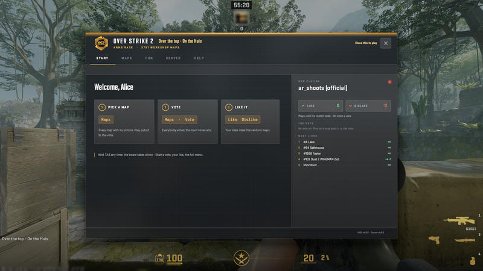
Where: The welcome window at a first login: until its X
Join tagline
a line on the window's page (Inside the window); also a line in chat.
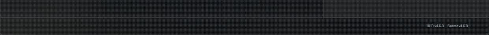
How it looks: The welcome window at a return: the tagline's line at the foot of its page, for 3 s
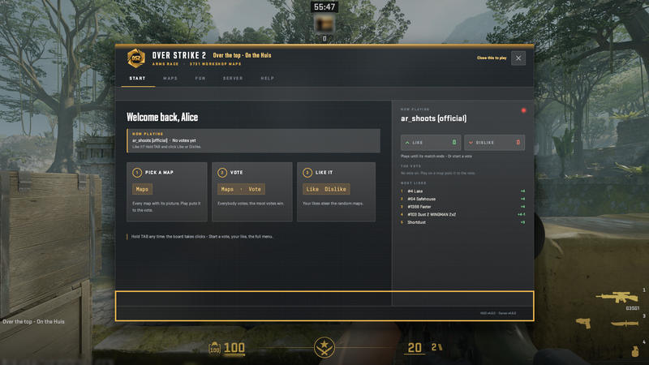
Where: The welcome window at a return: the tagline's line at the foot of its page, for 3 s
Welcome-back card
a line on the window's page (Inside the window).
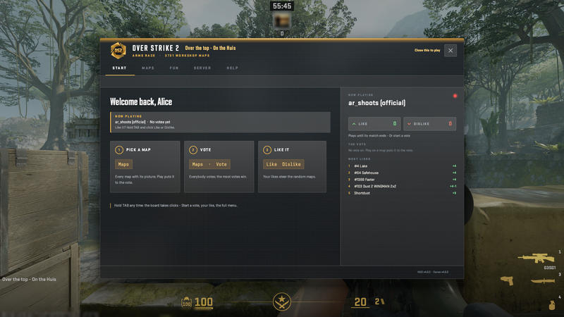
Where: The welcome window at a return: Welcome back, the map that is on, its likes, the hint
Now-playing card, at each map's first spawn
3c the map's own picture (Our card: centre, under the crosshair); also listed on the TAB board.
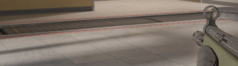
How it looks: The card under the crosshair: Now playing, the map's own picture, at the new map's first spawn
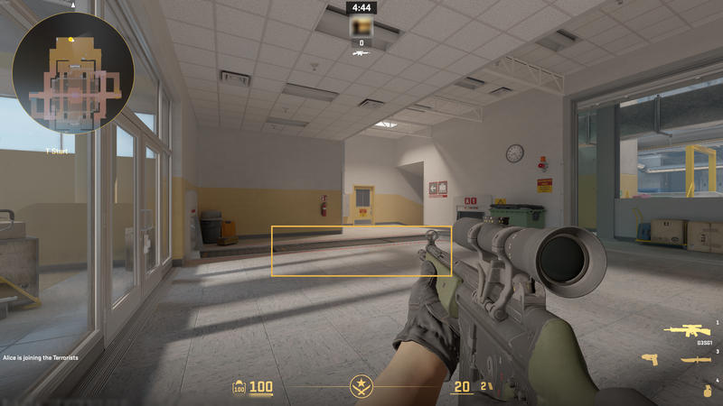
Where: The card under the crosshair: Now playing, the map's own picture, at the new map's first spawn
"Erik joined with HUD v4_6_0"
9a one line (CS2 plain centre text (PrintToCenter): white words, bottom centre, works without our HUD); also a line in chat; also listed on the TAB board.
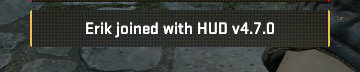
How it looks: CS2's plain centre text: who joined with which HUD
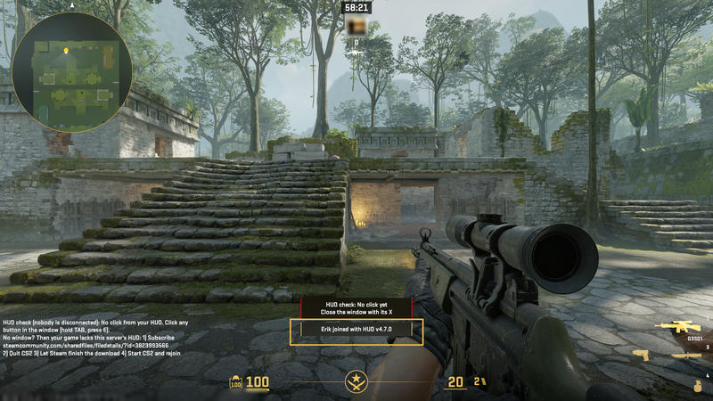
Where: CS2's plain centre text: who joined with which HUD
Your hud and its version
Your HUD is out of date: the banner that stays
4e status banner: stays up, readable (Top centre).
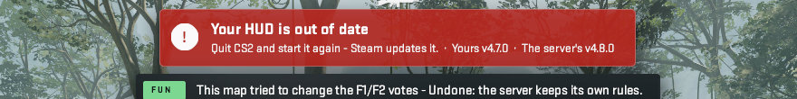
How it looks: The status banner: your HUD is out of date, the server's version faked
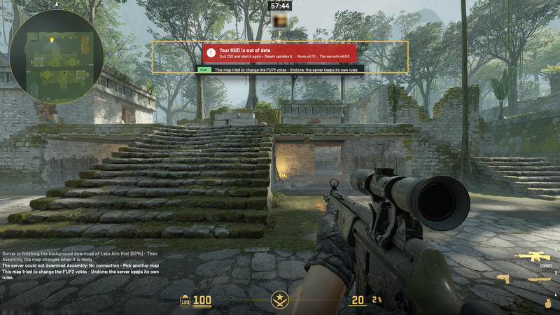
Where: The status banner: your HUD is out of date, the server's version faked
Your HUD is out of date: the warning at the join
NOT SHOWN.
No picture: The committed content has no panel for it (only the contents before v4_6_0 read svge/svlt); a game holding one is a published item, not committed code. The picks drop it: NOT SHOWN.
Your HUD is newer than the server's
4e status banner: stays up, readable (Top centre).
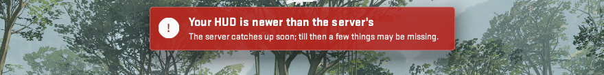
How it looks: The status banner: your HUD is newer than the server's
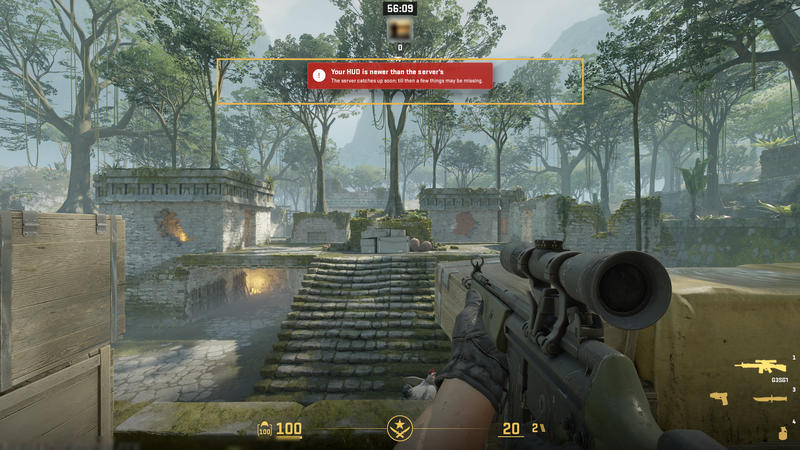
Where: The status banner: your HUD is newer than the server's
The HUD not shown by Steam, and back
4e status banner: stays up, readable (Top centre).
No picture: Its trigger is Steam hiding the item, and no verb sets the banner: gg_notice goes to the top line now. A test verb like css_gghud centre would make it a row.
HUD check: Click to play
7a the window, its own page (Centre-centre (needs an answer)).
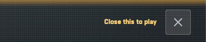
How it looks: The welcome window at a real join, while the HUD check waits: the X is the version button, Close this to play beside it
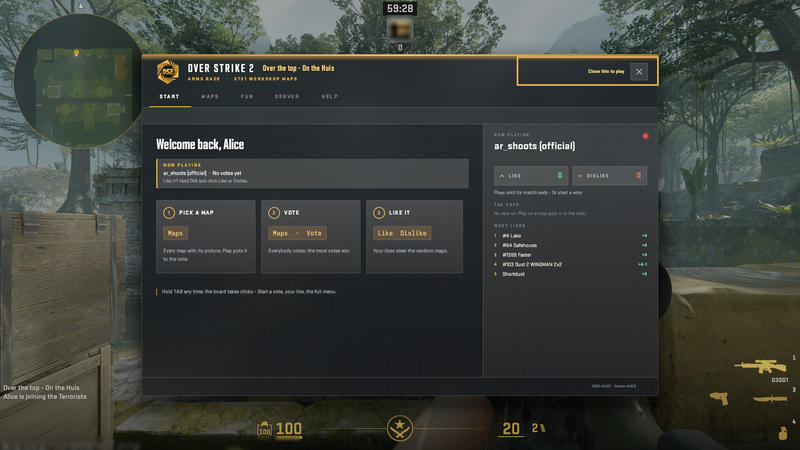
Where: The welcome window at a real join, while the HUD check waits: the X is the version button, Close this to play beside it
HUD check: the disconnect warning
10b two lines: the warning, then what to do (CS2 alert text (PrintToCenterAlert): white words, red bars, just above the plain text); also a line in chat.
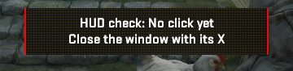
How it looks: The warning before the disconnect, in CS2's alert box; under HUD_CHECK warn its words say to close the window
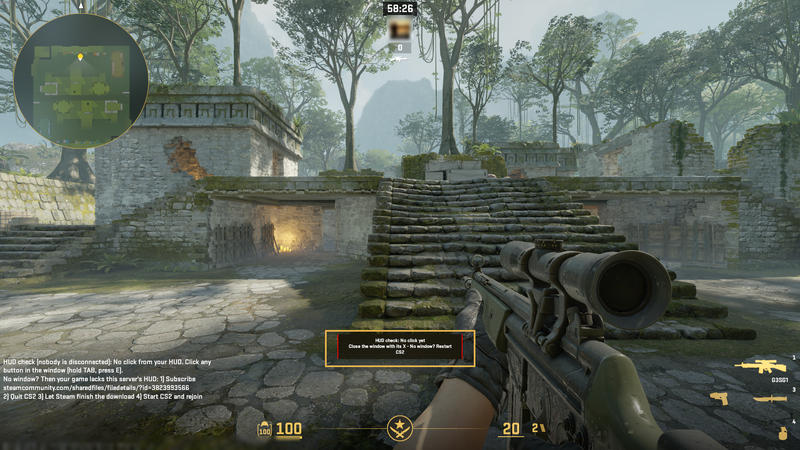
Where: The warning before the disconnect, in CS2's alert box; under HUD_CHECK warn its words say to close the window
The vote
The vote: everybody's window opens and freezes
7a the window, its own page (Centre-centre (needs an answer)).
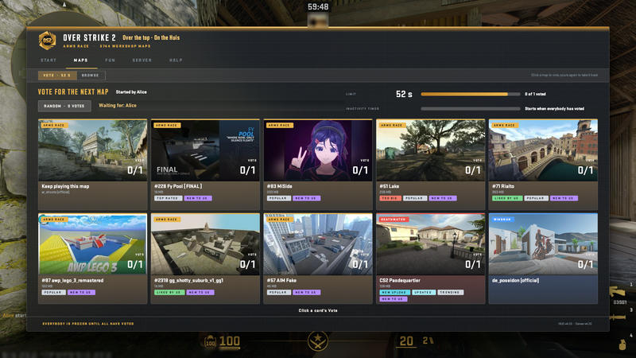
Where: The ballot: everybody's window big, open and frozen, ten tiles, Random, the clocks, Waiting for
The vote started: the line for everybody
NOT SHOWN; also a line in chat; also listed on the TAB board.
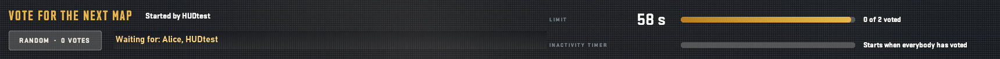
How it looks: The ballot's header: Started by HUDtest, the real line under a test name
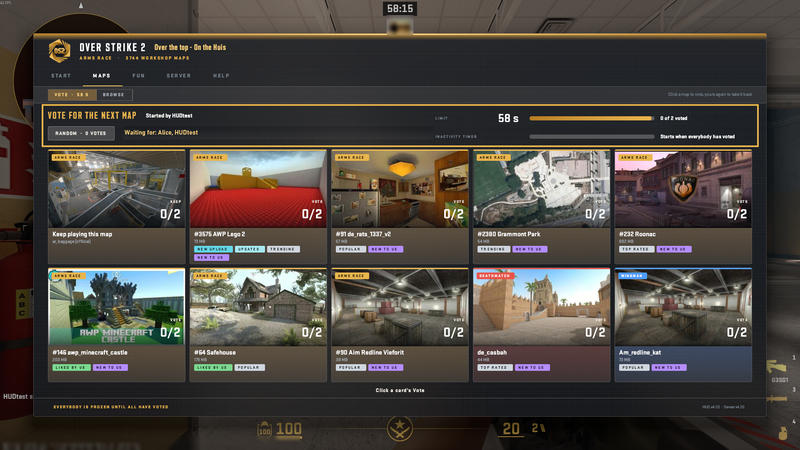
Where: The ballot's header: Started by HUDtest, the real line under a test name
Inactivity timer, and who reset it
a line on the window's page (Inside the window).
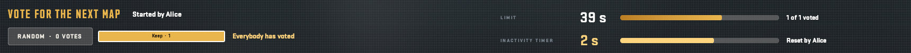
How it looks: The inactivity timer, and who reset it
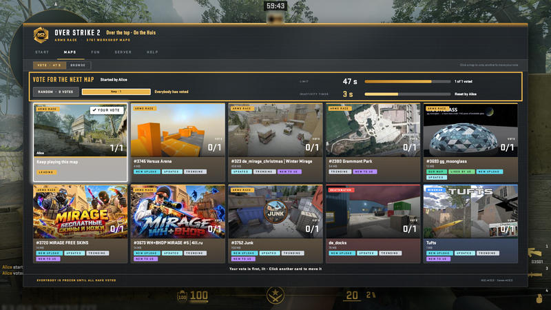
Where: The inactivity timer, and who reset it
The 60 s limit
a line on the window's page (Inside the window).
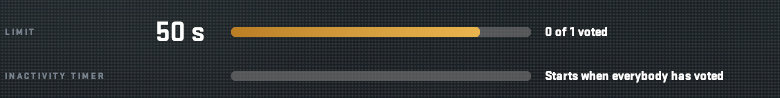
How it looks: The ballot's limit clock: its seconds left, how many have voted
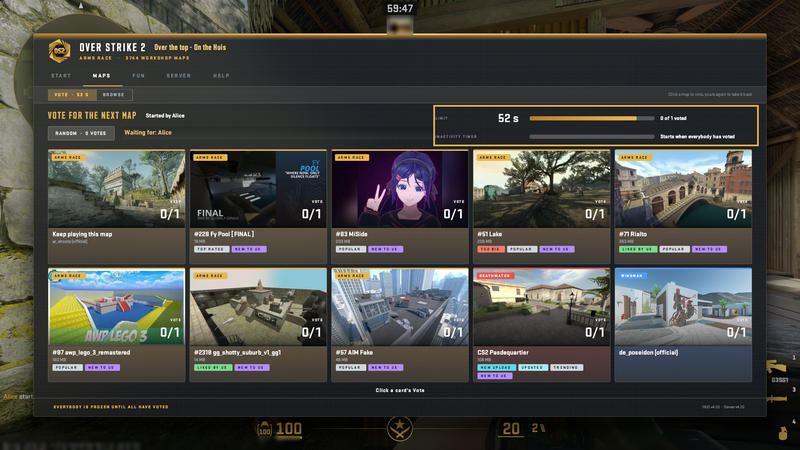
Where: The ballot's limit clock: its seconds left, how many have voted
Waiting for: the players who have not voted
a line on the window's page (Inside the window); also a line in chat; also listed on the TAB board.
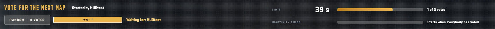
How it looks: The ballot: Waiting for: HUDtest, my vote on Keep, 1 of 2 voted
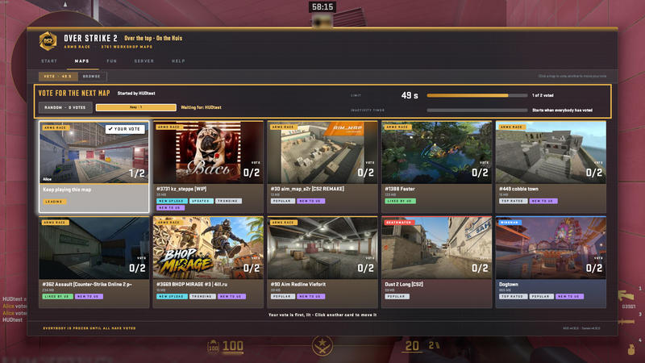
Where: The ballot: Waiting for: HUDtest, my vote on Keep, 1 of 2 voted
The vote line for a closed window
NOT SHOWN.
No picture: Removed from the plugin: the window is held open while the vote freezes. The picks drop it: NOT SHOWN; the owner's note says it should not be possible.
The vote decided, and the change counting down
a line on the window's page (Inside the window); also a line in chat; also listed on the TAB board.
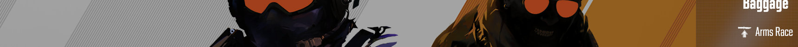
How it looks: The vote decided: NEXT MAP, The vote chose ... changing in N s, the top line, everybody still frozen
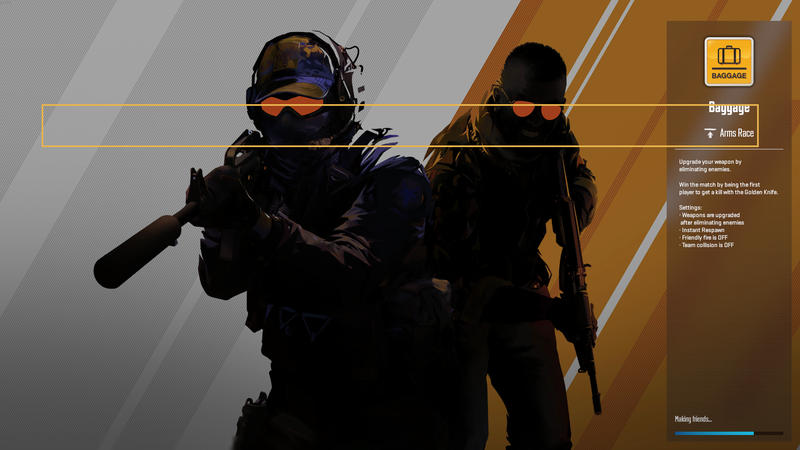
Where: The vote decided: NEXT MAP, The vote chose ... changing in N s, the top line, everybody still frozen
The vote kept the map
a line on the window's page (Inside the window); also a line in chat; also listed on the TAB board.
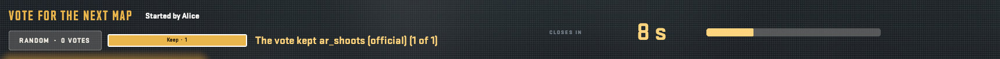
How it looks: The ballot's header: the vote kept the map, Closes in, everybody still frozen
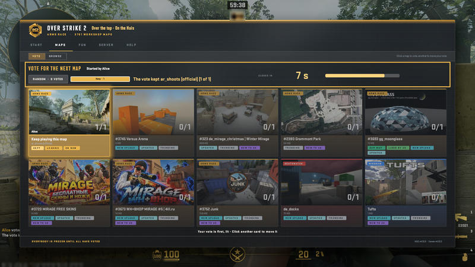
Where: The ballot's header: the vote kept the map, Closes in, everybody still frozen
You cannot call a vote yet
a line on the window's page (Inside the window); also a line in chat; also listed on the TAB board.
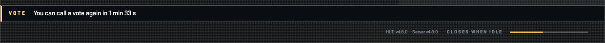
How it looks: The answer to a Start a vote in the wait after a vote: when the next one can start
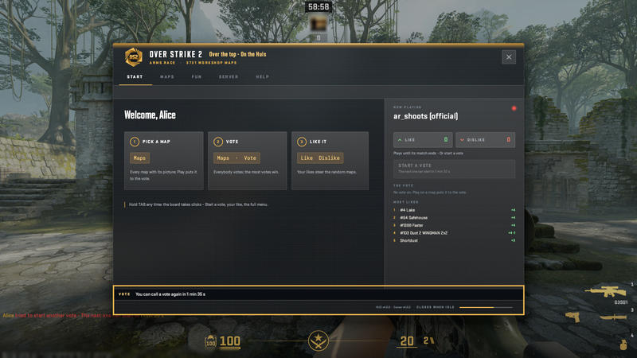
Where: The answer to a Start a vote in the wait after a vote: when the next one can start
Fun and game settings
Fun: one setting changed
4d top line with a category tab (Top centre); also a line in chat; also listed on the TAB board.
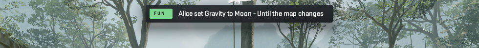
How it looks: The top line: one fun setting changed, and whoWhere: The top line: one fun setting changed, and who
Fun: Random
4d top line with a category tab (Top centre); also a line in chat; also listed on the TAB board.
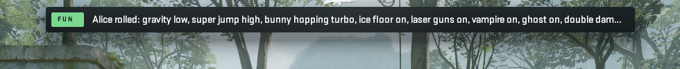
How it looks: The top line: Fun's Random, who, and what it rolled
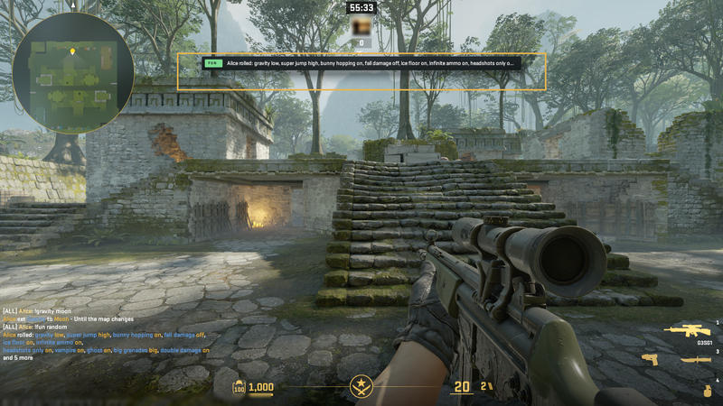
Where: The top line: Fun's Random, who, and what it rolled
Fun: Default
4d top line with a category tab (Top centre); also a line in chat; also listed on the TAB board.
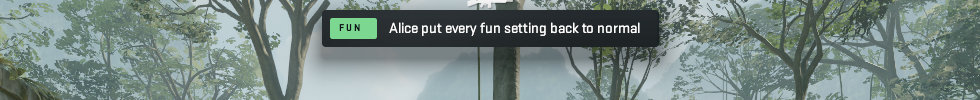
How it looks: The top line: Fun's Default, and who
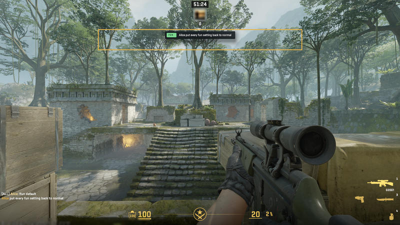
Where: The top line: Fun's Default, and who
Catch-up or grenade drops switched
4d top line with a category tab (Top centre); also a line in chat; also listed on the TAB board.
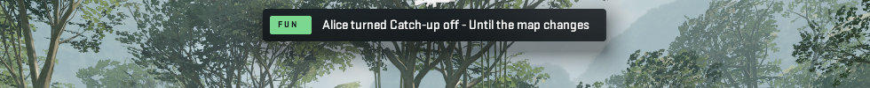
How it looks: The top line: catch-up switched, a fun setting like any otherWhere: The top line: catch-up switched, a fun setting like any other
"set by <name>" on settings that are not default
a line on the window's page (Inside the window); also a line in chat; also listed on the TAB board.
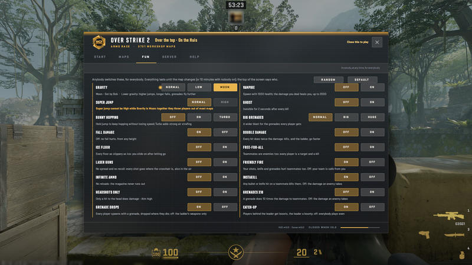
Where: FUN: Gravity Moon, its row marked: Moon - set by Bob
A map's game-changer undone
4d top line with a category tab (Top centre); also a line in chat; also listed on the TAB board.
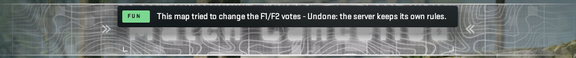
How it looks: The top line: a map's game-changer undone, the real thing
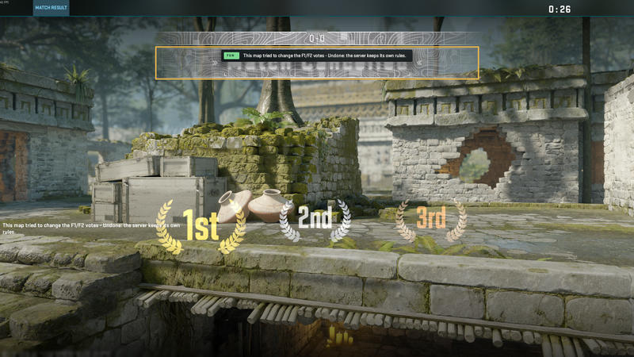
Where: The top line: a map's game-changer undone, the real thing
Catch-up's boost
3d a stack of slim rows (Our card: centre, under the crosshair); also a line in chat; also listed on the TAB board.
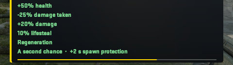
How it looks: Catch-up's boost: the card's green rows under the crosshair
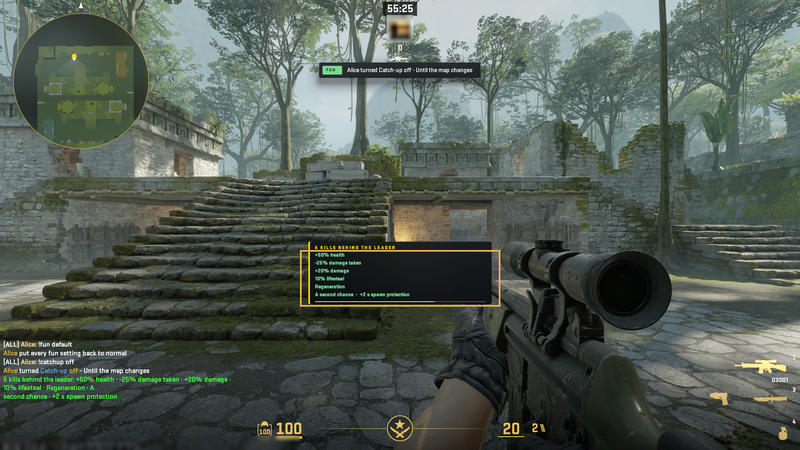
Where: Catch-up's boost: the card's green rows under the crosshair
The leader's bounty
3d a stack of slim rows (Our card: centre, under the crosshair); also a line in chat.
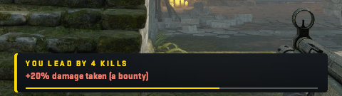
How it looks: The leader's bounty: the card's red rows under the crosshair
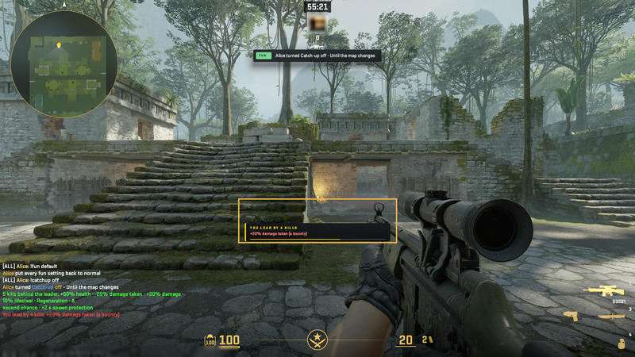
Where: The leader's bounty: the card's red rows under the crosshair
Maps, pictures and downloads
A map's picture, on request
NOT SHOWN.
No picture: Removed, as the owner's note asks: the picture belongs in the window and the browser, and the cards' pictures are not clickable. The picks: NOT SHOWN.
Map change counting down
6b countdown with the map's picture (Top centre); also a line in chat; also listed on the TAB board.
How it looks: The countdown banner with the map's picture
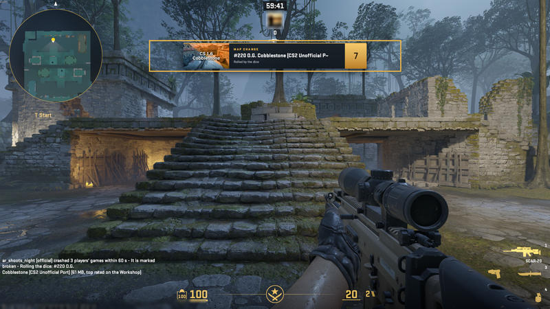
Where: The countdown banner with the map's picture
The server downloading a map
4d top line with a category tab (Top centre); also a line in chat; also listed on the TAB board.
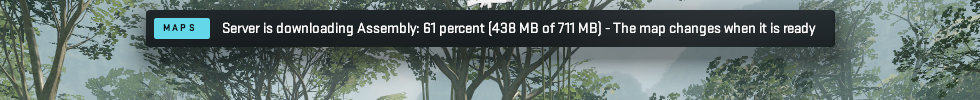
How it looks: The top line: Server is downloading Assembly: 61 percent (438 MB of 711 MB) - The map changes when it is ready
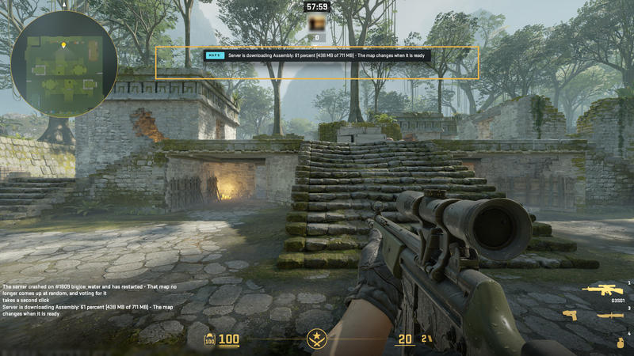
Where: The top line: Server is downloading Assembly: 61 percent (438 MB of 711 MB) - The map changes when it is ready
Finishing a background download first
4d top line with a category tab (Top centre); also a line in chat; also listed on the TAB board.
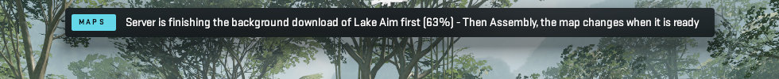
How it looks: The top line: Server is finishing the background download of Lake Aim first (63%) - Then Assembly, the map changes when it is readyWhere: The top line: Server is finishing the background download of Lake Aim first (63%) - Then Assembly, the map changes when it is ready
A download failed
4d top line with a category tab (Top centre); also a line in chat; also listed on the TAB board.
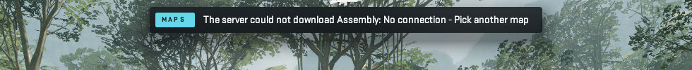
How it looks: The top line: The server could not download Assembly: No connection - Pick another mapWhere: The top line: The server could not download Assembly: No connection - Pick another map
A Workshop card downloading to the server
a line on the window's page (Inside the window); also a line in chat; also listed on the TAB board.
No picture: Its progress needs gg_ws_play, which downloads the map into the server's Workshop cache: a map left on production's volume. No verb fakes the step. maps-workshop-ready shows the card up to the click.
Play asks first (a broken or crashed map)
a line on the window's page (Inside the window).
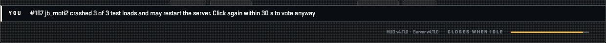
How it looks: Play on a risky map, the first click: Click again, the padlock, and the line says why. NEVER a second click: it would put the map to the voteWhere: Play on a risky map, the first click: Click again, the padlock, and the line says why. NEVER a second click: it would put the map to the vote
Why the dislike? (the reasons)
7a the window, its own page (Centre-centre (needs an answer)).
How it looks: Why the dislike?: the small dialog at the centreWhere: Why the dislike?: the small dialog at the centreHow it looks: Why the dislike? under the TAB cursorWhere: Why the dislike? under the TAB cursor
Restarts and updates
The server restarts after this match
4e status banner: stays up, readable (Top centre); also a line in chat; also listed on the TAB board.
How it looks: The status banner: the server restarts after this matchWhere: The status banner: the server restarts after this match
The restart counting down (10 s)
6b countdown with the map's picture (Top centre); also a line in chat; also listed on the TAB board. It has no map of its own, so the picture is of the map that is on.
How it looks: The countdown banner with the logo: the restartWhere: The countdown banner with the logo: the restart
A CS2 update: update your game
4d top line with a category tab (Top centre); also a line in chat; also listed on the TAB board.
How it looks: The top line: a CS2 update: the server restarts at this match's end, and restart CS2 afterwardsWhere: The top line: a CS2 update: the server restarts at this match's end, and restart CS2 afterwards
"Updated to vX" after the reconnect
4d top line with a category tab (Top centre); also a line in chat; also listed on the TAB board.
How it looks: The top line: Updated to CS2 1.41.9.6 - Welcome backWhere: The top line: Updated to CS2 1.41.9.6 - Welcome back
A player's !restart
4d top line with a category tab (Top centre); also a line in chat; also listed on the TAB board.
How it looks: The countdown banner: a player's restart, naming whoWhere: The countdown banner: a player's restart, naming who
Server news and health
A plain news item (Previous, the match length, new maps, a mode's reload)
4d top line with a category tab (Top centre); also a line in chat; also listed on the TAB board.
How it looks: The top line: a plain news item, the match length set by a fake playerWhere: The top line: a plain news item, the match length set by a fake player
The server went down on a map
4d top line with a category tab (Top centre); also a line in chat; also listed on the TAB board.
How it looks: The top line: The server crashed on #1809 bigjoe_water and has restarted - That map no longer comes up at random, and voting for it takes a second clickWhere: The top line: The server crashed on #1809 bigjoe_water and has restarted - That map no longer comes up at random, and voting for it takes a second click
The joiner's crash note
a line on the window's page (Inside the window); also a line in chat; also listed on the TAB board.
No picture: Needs a real crash of the server the client is on, which records a crash mark on the map (CrashWatch.RecordCrash); no verb sends its words. top-server-down shows the crash's other line.
Answers to your own clicks
The answer to your own click: refused, click again, already set
a line on the window's page (Inside the window); also a line in chat; also listed on the TAB board.
How it looks: Chat: a refusal with its reasonWhere: Chat: a refusal with its reasonWhere: FUN: Super jump High clicked just as Moon gravity greys it: the bubble at the button says whyHow it looks: Chat: a setting typed that is on already: the reply says soWhere: Chat: a setting typed that is on already: the reply says soHow it looks: SERVER > Game: the restart after its first click, Press again; the line says click againWhere: SERVER > Game: the restart after its first click, Press again; the line says click again
The chat interface
Command replies: unknown command, an alias taught, !help's list
a chat line with functional colours (Chat: the chat interface).
How it looks: Chat: an unknown commandWhere: Chat: an unknown commandHow it looks: Chat: an alias taught, !help's list, and the Help page it opensWhere: Chat: an alias taught, !help's list, and the Help page it opens
Lines for everybody: a vote clicked on a card
NOT SHOWN; also a line in chat; also listed on the TAB board.
How it looks: A vote clicked on a card, in chat: who voted, and who still has toWhere: A vote clicked on a card, in chat: who voted, and who still has to
"This server uses the menu: press TAB" (only without our HUD)
10b two lines: the warning, then what to do (CS2 alert text (PrintToCenterAlert): white words, red bars, just above the plain text); also a line in chat; also listed on the TAB board.
No picture: Its condition no longer exists: hud.addon is required and a server without the HUD cannot start (commits 78c6698 and 9685f17), and the catalogue has no kind for it. The owner's note on it asked the same: is this an error state?